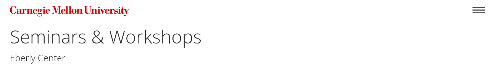
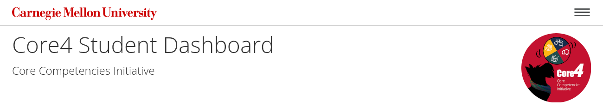
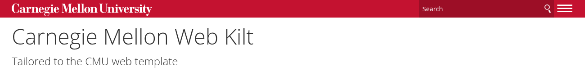
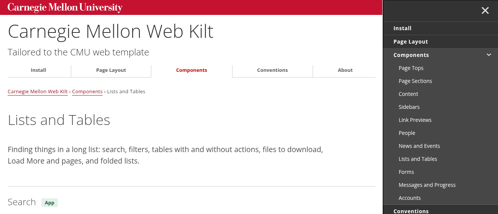
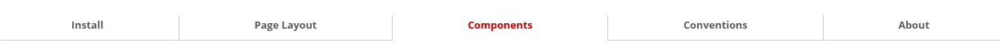
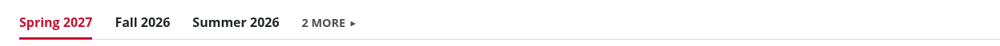
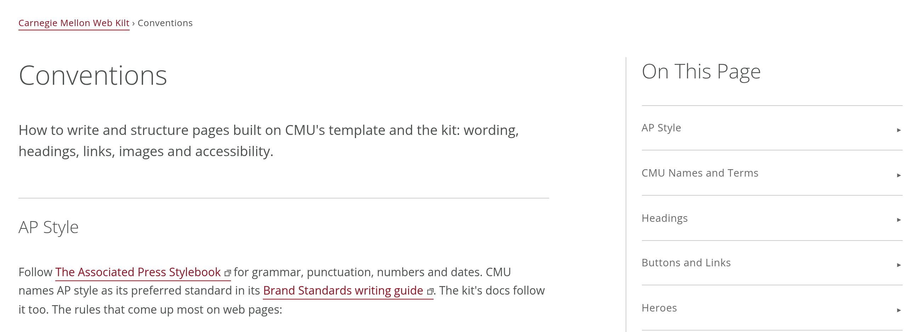
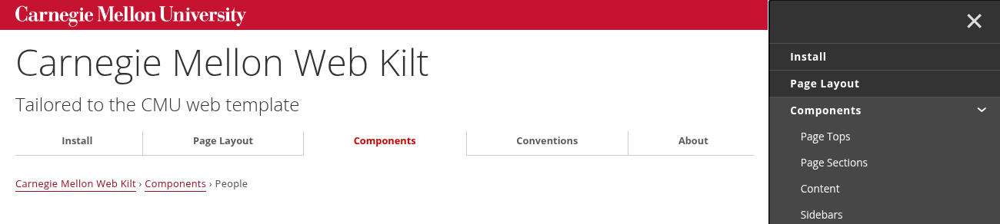
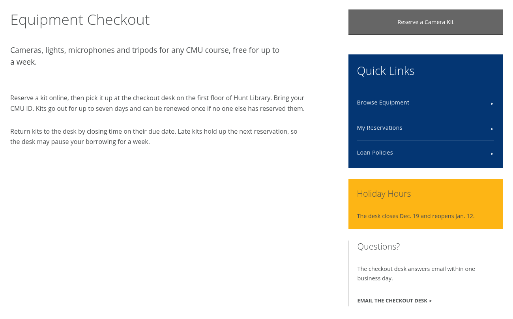
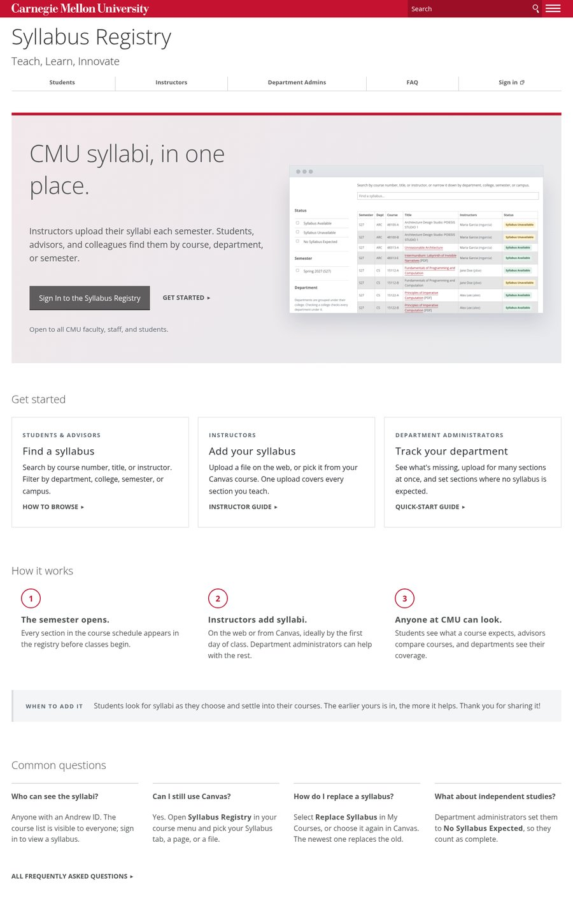

Page Layout
The CMU template's own header, navigation, breadcrumbs and footer, as on this page. A content management system (CMS) such as Cascade builds them from your site's settings, so you only need their names; an app writes them itself, using this markup.
On This Page
Try It
The Header
Change this site's own header to see the options, then open the menu to see what moves there. Your choices stay as you browse the rest of these pages, until you reset them or close the tab.
Site Name Template
The site's name links to its home page. Under it, an optional
<h2> names who runs it, such as a department, as a link to their
site or as plain text. It can also be a slogan, as on these docs.
#sitename, sitetitle

<div id="sitename">
<span class="sitetitle"><a href="/">Seminars & Workshops</a></span>
<h2><a href="https://www.cmu.edu/teaching/">Eberly Center</a></h2>
</div>
For a logo, wrap the name and the <h2> in a
<div> and put the logo, as a linked image, after it (try it on this page, with a placeholder from PlaceMellon). The template puts the logo on the right, up
to 150px tall, and below the name on phones. Use only an official logo for your unit
from University Communications & Marketing. Leave no space between the
</div> and the <a>: the two share the width
exactly, so a space pushes the logo onto its own line. On phones the template moves
the logo below the name and subtitle, at up to half the screen's width, so keep the
image no larger than you want it shown there.

<div id="sitename">
<div>
<span class="sitetitle"><a href="/">Core4 Student Dashboard</a></span>
<h2><a href="https://www.cmu.edu/corecompetencies/">Core Competencies Initiative</a></h2>
</div><a href="/"><img src="/images/cci-wordmark.png" alt="Core Competencies Initiative Wordmark"></a>
</div>Site Search Template
The template's search box goes in the roof, before the menu button. It searches
cmu.edu, with a "Search this site only" box that appears when someone clicks in it;
set that box's value to your site's ID (in Cascade, its Cascade site ID).
The template also puts a copy at the top of the menu, and on phones shows it as a row
under the wordmark.
search, search-form, searchSite

<form action="https://search.cmu.edu" class="search search-form" method="get" name="customForm">
<input name="form_id" type="hidden" value="basic-form">
<input name="site" type="hidden" value="">
<input name="ie" type="hidden" value="UTF-8">
<label><span>Search</span> <input aria-label="Search" name="q" placeholder="Search"></label>
<button title="Submit" type="submit">Search</button>
<label class="searchSite"><span>Search this site only</span> <input checked name="site" type="checkbox" value="your-site-id"></label>
</form>- A CMS site gets it from the site's settings, as in Cascade; you don't write it.
- Apps usually leave it out. It searches cmu.edu, not your app, so it competes with the app's own search. Put the app's search on the page where its results appear.
- Put the account link after the search form, whether it's Sign In or the signed-in person's name. The kit lines them up as search, the account link, then the menu button.
Navigation Template
One list, nav#nav, in the footer's third column. The template's script
turns it into two things:
- Header tabs under the site name, from 768px up: the first ten top-level items, without their sub-lists. The current page's tab is red and underlined.
- The menu that slides out from the menu button, with every item and sub-list. Phones use only the menu.
nav#nav, active, secondary,
external

Nest pages the way the site is organized: the top level holds a few sections, and each section's pages go in a sub-list under it, as deep as the site needs. The tabs then stay short, and the menu shows the whole site with the current section open. The home page isn't in the list: the site name links to it.
<nav id="nav">
<ul>
<li><a href="/queues">Queues</a></li>
<li><a href="/my-courses">My Courses</a></li>
<li>
<a href="/help">Help</a>
<ul>
<li><a href="/help/students">For Students</a></li>
<li>
<a href="/help/staff">For Course Staff</a>
<ul>
<li class="active"><a href="/help/staff/open" aria-current="page">Open Office Hours</a></li>
<li><a href="/help/staff/canvas">Link It From Canvas</a></li>
</ul>
</li>
</ul>
</li>
<li class="secondary"><a class="external" href="https://www.cmu.edu/tli-office/">Teach, Learn, Innovate</a></li>
<li class="secondary"><a href="/logout">Sign Out</a></li>
</ul>
</nav>| Mark | What it does |
|---|---|
li.active |
The page you're on, red in the menu. Put it on the current page's own item,
however deep; the template marks the items above it, so its section's tab turns
red too and its sub-lists open. Add aria-current="page" to its link
for screen readers.
|
A sub-list (ul in an li) |
A section's pages, shown only in the menu, folded under an arrow. Nest as deep as you need. The template opens the ones holding the active item. |
| A nested active item | On a computer screen, when the current page is below the top level or has pages of its own, the menu starts open beside the page, so people can see where they are. Top-level pages with nothing under them start with it closed. Tablets and phones always start closed. |
li.secondary |
Kept out of the tabs; in the menu, shown in lighter type. For links such as Contact Us or Sign Out. |
a.external |
Adds the template's leave-site icon to a link to another site. |
This site's own menu is an example: Components is a section, with its pages under it. Keep to about six top-level items so the tabs fit on one row. To show the signed-in person beside the menu button, see Account Status.
Style
Keep menu labels short, in Title Case.
Navigation, Tabs or Sidebar?
Pages of the site go in the navigation, which the template shows as tabs in the header: Browse, My Courses, Help.

Views of one page go in
tabs (cmu-tabs) at the top of the content, such as
one tab for each semester of the same list of courses.

Sections of one long page go in an On This Page box at the top of the sidebar, as on Conventions, or, when the content uses the full width, in an On This Page link bank under the intro, as on Forms. Leave them off pages short enough to see at a glance.

The current page goes in the breadcrumbs, when a page sits below another.
Tabs App
Links between views of the same page, such as semesters. Mark the current one with
aria-current="page". Use a div with
role="navigation", not a nav: the template takes the borders
off every link in a nav, including the underline that marks the current
tab. To fold a long row, put the rest in a
details.cmu-more.cmu-tabs-more at the end, like a
folded list: a "2 More" link stays at the end of the
first row, and when it opens, the rest wrap onto the next line and the link says Show
Fewer. Keep the current tab out of the folded part, so it always shows.
cmu-tabs, cmu-tabs-more
Tab Panels
Tabs can also switch what shows in place, such as the same steps for different
platforms. Then each tab is a button with role="tab" in a
row with role="tablist", and each panel a div with
role="tabpanel", hidden until its tab is picked. The kit's script
switches them, with the arrow keys too. Give the row a data-cmu-tabs name
and each tab a data-cmu-tab value, and every row with that name on the
page switches together, and the choice is remembered across pages. Without the script,
every panel shows.
cmu-tabs, data-cmu-tabs, data-cmu-tab
Open Self Service and choose Install under Campus Printing.
Open Software Center and choose Install under Campus Printing.
Breadcrumbs Template
Breadcrumbs show the path from the site's home to the current page.
- Place the trail first inside
#content. - Link each preceding step. Leave the current page as plain text at the end.
- Match the navigation labels. Use "Install," not "Install the Kit," and "Gallery," not "Sites and Apps Built With the Kit."
- Omit breadcrumbs on the home page.
breadcrumbs

<div class="breadcrumbs">
<a href="/">Office Hours Queue</a> › <a href="/help">Help</a> › For Course Staff
</div>
Separate the steps with
› ( › ), as Cascade does,
so a step never starts a new line with the arrow.
Content and Sidebar Template
.content lays out its direct children as columns. Put the page in one
<div> inside it, and for a sidebar, add a second
div.sidebar beside it; on phones the sidebar drops below.
content, wide, sidebar

<div class="content">
<div>
<h1>Equipment Checkout</h1>
<p class="cmu-lead">Cameras, lights, microphones and tripods for any CMU course, free for up to a week.</p>
<p>Reserve a kit online, then pick it up at the checkout desk…</p>
<p>Return kits to the desk by closing time on their due date…</p>
</div><div class="sidebar">
<div class="simple">
<a class="btn wide" href="#">Reserve a Camera Kit</a>
</div>
<div class="list blue invert">
<h1>Quick Links</h1>
<ul>
<li><a href="#">Browse Equipment</a></li>
<li><a href="#">My Reservations</a></li>
<li><a href="#">Loan Policies</a></li>
</ul>
</div>
<div class="gold">
<h2>Holiday Hours</h2>
<p>The desk closes Dec. 19 and reopens Jan. 12.</p>
</div>
<div class="left-rule">
<h2>Questions?</h2>
<p>The checkout desk answers email within one business day.</p>
<p><a class="cta" href="#">Email the Checkout Desk</a></p>
</div>
</div>
</div>-
Leave no space between the page's
</div>and<div class="sidebar">, as above. The two columns fill the width exactly, so even a line break between them pushes the sidebar below the page. It's the same trap as a logo in the header. -
Without
wide, the page takes about 60% of the width, leaving room for the sidebar. Addwideto give it the full width when there's no sidebar. -
Several
.contentblocks can follow one another, for a page in bands.
Home Page for a Service Description
A service description is a site that explains an app or service and sends people to it, built in Cascade, another CMS or plain HTML. Nothing about its home page is required, but if you're not sure where to start, this order works well for most services. Use the sections your service needs. Skip path cards if everyone follows the same route, and explain how it works only if people need that context. Let recurring questions guide what you add.
-
1. Hero
A tagline, a sentence about the service, a button into it and a screenshot.
-
2. Path Cards
One for each kind of person who uses it (students, instructors, administrators), each leading to a page of its own.
-
3. How It Works
Three or four short steps, with a callout under them for the one thing people most need to know.
-
4. FAQ Teaser
A few common questions, with a link to the full FAQ.


Panels for Framed Pages App
For pages inside another tool (body.cmu-framed): plain and left-aligned,
since the host already frames them. The actions go at the bottom, the main one first,
on the left, like every other row of buttons.
cmu-panel, cmu-panel-header, cmu-panel-body,
cmu-panel-footer
Choose a Page
Pages in this Canvas course.
Scripts
Just before </body>, from the template, in this order. Without them
the page still works, with the navigation as a list in the footer.
<script src="https://www.cmu.edu/common/standard-v6/js/list.min.js"></script>
<script src="https://www.cmu.edu/common/standard-v6/js/jquery-1.10.1.min.js"></script>
<script src="https://www.cmu.edu/common/standard-v6/js/main.6.7.min.js"></script>
<script src="https://cdn.jsdelivr.net/gh/cmu-web/cmu-web-kilt@0.6.4/js/cmu-app.js" integrity="sha384-10393F76wEQPHaJEEoM9M1QEQsl9mTezDdEM45kArp0j26SWs3gxiGsXKrmwJHio" crossorigin="anonymous"></script> <!-- for components that depend on it -->
On a page with components that depend on a script, the kit's
cmu-app.js comes last, after the template's.
Besides the navigation, the template's script removes style="" from
spans, and opens and closes the template's .collapsed headings.
The Whole Page
All the parts above in one page, with every optional extra in place and marked: the
app stylesheet and cmu-app, icons, search, Sign In, a sidebar and the
kit's script. Leave out what you don't use. The navigation goes in the footer: the
template's script copies it into the header and the menu, and without the script it
stays a plain list in the footer.
Its head also requires the tags that give a shared link its title, sentence and picture; see Link Previews.
<!DOCTYPE html>
<html lang="en">
<head>
<meta charset="utf-8">
<meta name="viewport" content="width=device-width, initial-scale=1.0">
<title>Open Office Hours - Office Hours Queue - Carnegie Mellon University</title>
<link href="https://fonts.googleapis.com/css?family=Open+Sans:300,300italic,400,400italic,600,700,700italic" rel="stylesheet">
<link href="https://www.cmu.edu/common/standard-v6/css/main.6.7.min.css" media="screen" rel="stylesheet">
<link href="https://www.cmu.edu/common/standard-v6/css/print.min.css" media="print" rel="stylesheet">
<link href="https://www.cmu.edu/favicon.ico" rel="icon">
<link href="https://www.cmu.edu/favicon-152.png" rel="apple-touch-icon-precomposed">
<meta content="#9f0000" name="msapplication-TileColor">
<meta content="https://www.cmu.edu/favicon-144.png" name="msapplication-TileImage">
<!-- The kit, after the template -->
<link href="https://cdn.jsdelivr.net/gh/cmu-web/cmu-web-kilt@0.6.4/css/cmu-cms.css" integrity="sha384-+u4UJJGawMpfkXYetQDuUBs4iJZaH0GIVRw5uidyWjaUBPGQPtSqV4/O66AgMACJ" crossorigin="anonymous" rel="stylesheet">
<link href="https://cdn.jsdelivr.net/gh/cmu-web/cmu-web-kilt@0.6.4/css/cmu-app.css" integrity="sha384-Tj5sbg6foKwNHx77Xj9uSKHv4N7jiYnj97prQWE3B2+6v3K8tsqz/xmsjxeJKvjA" crossorigin="anonymous" rel="stylesheet"> <!-- apps only -->
<!-- Optional: Bootstrap Icons, if the page uses icons -->
<link href="https://cdn.jsdelivr.net/npm/bootstrap-icons@1.13.1/font/bootstrap-icons.min.css" integrity="sha384-CK2SzKma4jA5H/MXDUU7i1TqZlCFaD4T01vtyDFvPlD97JQyS+IsSh1nI2EFbpyk" crossorigin="anonymous" rel="stylesheet">
<!-- Your own stylesheet, last -->
<link href="/css/your-site.css" rel="stylesheet">
</head>
<body class="no-js cmu-app"> <!-- cmu-app in apps only -->
<div id="container">
<header>
<div class="roof red invert">
<div>
<a class="wordmark" href="https://www.cmu.edu/">Carnegie Mellon University</a>
<!-- Optional: search cmu.edu; set "your-site-id" to your Cascade site ID -->
<form action="https://search.cmu.edu" class="search search-form" method="get" name="customForm">
<input name="form_id" type="hidden" value="basic-form">
<input name="site" type="hidden" value="">
<input name="ie" type="hidden" value="UTF-8">
<label><span>Search</span> <input aria-label="Search" name="q" placeholder="Search"></label>
<button title="Submit" type="submit">Search</button>
<label class="searchSite"><span>Search this site only</span> <input checked name="site" type="checkbox" value="your-site-id"></label>
</form>
<!-- Optional: Sign In, or the signed-in person's name, before the menu button -->
<a class="cmu-account" href="/login">Sign In</a>
<button aria-label="toggle menu" aria-pressed="false" class="menu-btn" href="#nav"><b>—</b><b>—</b><b>—</b></button>
</div>
</div>
<div id="sitename">
<span class="sitetitle"><a href="/">Office Hours Queue</a></span>
<h2>Your Office</h2>
</div>
</header>
<main id="content">
<div class="breadcrumbs">
<a href="/">Office Hours Queue</a> › <a href="/help">Help</a> › <a href="/help/staff">For Course Staff</a> › Open Office Hours
</div>
<!-- Optional: a sidebar; it must touch the page's </div>, or it drops below the page -->
<div class="content">
<div>
<h1>Open Office Hours</h1>
<p>The page.</p>
</div><div class="sidebar">
<div class="simple">
<a class="btn wide" href="/queues/new">Open a Queue</a>
</div>
</div>
</div>
</main>
<footer class="grid column3 invert">
<div>
<p>Office Hours Queue<br>Carnegie Mellon University<br>5000 Forbes Avenue<br>Pittsburgh, PA 15213</p>
<ul><li><a href="https://www.cmu.edu/legal/">Legal Info</a></li><li><a href="https://www.cmu.edu/">www.cmu.edu</a></li></ul>
<ul><li>© 2026 Carnegie Mellon University</li></ul>
</div>
<div></div>
<div>
<nav id="nav">
<ul>
<li><a href="/queues">Queues</a></li>
<li><a href="/my-courses">My Courses</a></li>
<li>
<a href="/help">Help</a>
<ul>
<li><a href="/help/students">For Students</a></li>
<li>
<a href="/help/staff">For Course Staff</a>
<ul>
<li class="active"><a href="/help/staff/open" aria-current="page">Open Office Hours</a></li>
<li><a href="/help/staff/canvas">Link It From Canvas</a></li>
</ul>
</li>
</ul>
</li>
</ul>
</nav>
</div>
</footer>
</div>
<!-- The template's scripts, in this order -->
<script src="https://www.cmu.edu/common/standard-v6/js/list.min.js"></script>
<script src="https://www.cmu.edu/common/standard-v6/js/jquery-1.10.1.min.js"></script>
<script src="https://www.cmu.edu/common/standard-v6/js/main.6.7.min.js"></script>
<!-- The kit's script, last, for copy buttons, countdowns and screenshots that enlarge -->
<script src="https://cdn.jsdelivr.net/gh/cmu-web/cmu-web-kilt@0.6.4/js/cmu-app.js" integrity="sha384-10393F76wEQPHaJEEoM9M1QEQsl9mTezDdEM45kArp0j26SWs3gxiGsXKrmwJHio" crossorigin="anonymous"></script>
</body>
</html>-
Keep
no-json<body>. The template's script removes it, and the template styles the page differently until then. -
The roof (
div.roof) is the strip across the top with the wordmark. Addred invertfor a red roof, as here, ordarkgrey invertfor dark gray; without either it's white. - The favicon is CMU's own, from www.cmu.edu, as on every CMS site: the four lines after the stylesheets.
- The footer starts with the site or app name, the same as in the header, on the line above Carnegie Mellon University's address.
-
Add
cmu-appto<body>in an app (see App Components).
Template Quirks
-
Tables are
display: blockso they scroll on phones, which stops them stretching. Addcmu-fullto stretch one to full width from 768px up. -
The template's script removes
style=""from spans. Use a div when you need an inline style, such as a bar's width. -
.contentlays out its direct children as columns, so put one wrapper<div>inside it. -
A logo in the header must follow the site name's
<div>with no space between them, or it drops below the name. -
A sidebar must follow the page's
<div>in.contentthe same way,</div><div class="sidebar">, or it drops below the page. -
A formatter such as Prettier, run on your HTML or templates, can put a line break
between those two pairs, and the logo or sidebar drops. Put
<!-- prettier-ignore -->right before the site name's<div>and before the.contentblock, so it leaves them as written. -
.btnand other classes that setdisplayoverride a barehiddenattribute. The kit makeshiddenalways hide. -
The template's script turns every in-page link (
href="#id") intojavascript:void(0)and scrolls with its own animation, so the address never shows the section and Back doesn't return. Withcmu-app.js, the links stay real: the address shows the section, and Back works.